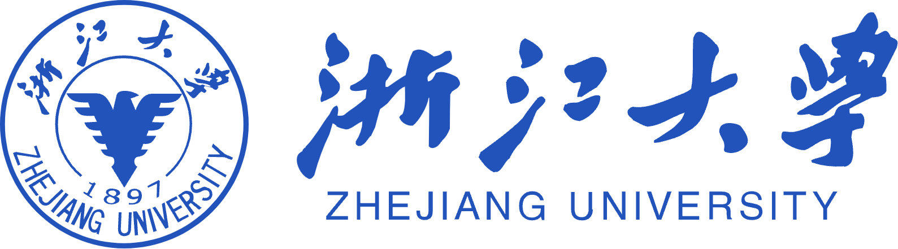

👨🎓 About Me
你好，我是万博岩，来自广东深圳，现就读于浙江大学农业与生物技术学院，专业排名第 3，保研直博本校。
我的研究兴趣主要集中在作物科学、植物抗逆与大麦耐盐机制。本科期间先后在核农所、植物抗逆高效全国重点实验室和作物科学研究所开展科研训练，主持校级 SRTP 项目，并参与国家级大学生创新训练项目。
科研之外，我也参与创新创业、学生工作与社会实践。现任学院兼职辅导员，曾任兼职团委副书记、学院双创中心负责人和农学 2201 团支部团支书。
🔥 News
- 2025: 🎉 获中国国际大学生创新大赛金奖。
- 2025: 获“农行杯”浙江省国际大学生创新大赛金奖。
- 2025: 获浙江省第十九届“挑战杯”大学生课外学术科技作品竞赛银奖。
- 2024: 🎉 获第十四届“挑战杯”秦创原中国大学生创业计划竞赛金奖。
- 2024: 以第一负责人身份获浙江省国际大学生创新大赛银奖。
- 2023: 社会实践团队获评优秀社会实践团队。
🔎 Research Experience

作物科学研究所，浙江大学农业与生物技术学院
本科生科研训练，2024 — 至今
研究方向：作物抗逆与大麦耐盐机制
指导教师：沈秋芳老师
主持校级 SRTP，项目入选本科生国家自然科学基金培育项目。
植物抗逆高效全国重点实验室，浙江大学生命科学学院
本科生科研训练，2023 — 2024
研究方向：植物抗逆
指导教师：王智烨老师
参与国家级大学生创新训练项目。
核农所，浙江大学农业与生物技术学院
本科生科研训练，2022 — 2023
指导教师：杨震老师
开启实验室科研训练，建立基础实验能力与研究兴趣。
📄 Publications
-
The Potential Functions of HvDnaJ Genes in Regulating Salt Tolerance in Barley
Frontiers in Plant Science，JCR Q1，第四作者。
-
A transcription factor HvCBP60-8 confers salt tolerance in barley
The Plant Journal，JCR Q1，第四作者。
-
HvWRKY33 negatively regulates barley salt tolerance by interacting with HvFAR5 and HvAATP1
共同第一作者（排序第三），在修。
🎖️ Honors and Awards
- 中国国际大学生创新大赛金奖，2025
- “农行杯”浙江省国际大学生创新大赛金奖，2025
- 浙江省第十九届“挑战杯”大学生课外学术科技作品竞赛银奖，2025
- 第十四届“挑战杯”秦创原中国大学生创业计划竞赛金奖，2024
- 浙江省国际大学生创新大赛银奖（第一负责人），2024
- 浙江省政府奖学金、校级优秀团员、校级优秀团干部
- 浙江大学青年志愿者服务五星荣誉
🎓 Education and Service
- 浙江大学农业与生物技术学院，农学相关专业；专业排名第 3，保研直博本校。
- 学院兼职辅导员；曾任兼职团委副书记、学院双创中心负责人。
- 组织云南景东、湖南三地等社会实践，团队获 2023 年优秀社会实践团队。
- 所带团支部获先进团支部、五四红旗团支部等荣誉。
- 2024 年浙江大学军训师优秀参训干部，2026 年军训理想信念宣讲团成员。